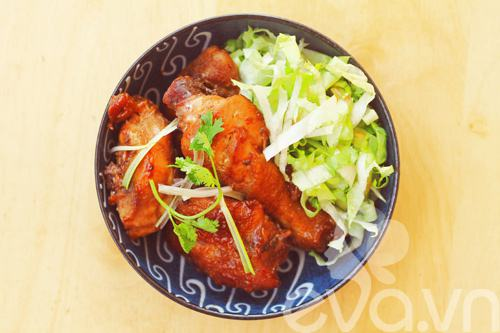

Cùng bắt tay làm thử thôi nào!
Nguyên liệu: (khẩu phần cho 2 người)
- 600g thịt gà
- 500ml nước dừa
- 1 tép tỏi
- 1 củ hành tím
- Gia vị: 30ml nước tương; 30g bột nêm; 5g ớt bột; 5ml dầu hào
- 10ml mật ong
- 10ml dầu ăn
Thực hiện:
Bước 1: Chặt nhỏ thịt gà rồi đem rửa sạch. Khứa vài đường trên bề mặt các miếng thịt. Đem ướp thịt cùng 15g bột nêm và 5g ớt bột.
Bước 2: Đặt chảo lên bếp, cho 10ml dầu ăn vào, mở lửa vừa. Cho thịt gà vào áp chảo khoảng 20 phút. Trở các mặt để thịt chín đều.
Bước 3: Đập dập, bóc vỏ, băm nhuyễn 1 tép tỏi và 1 củ hành tím. Làm nước sốt ướp bằng cách pha 600g nước dừa cùng 30ml nước tương, 15g bột nêm, 5ml dầu hào, 10ml dầu ăn. Khuấy đều để gia vị hòa vào nhau.
Bước 4: Khi thịt gà chuyển sang màu vàng, nhẹ nhàng đổ nước sốt vào chảo, tiếp tục nấu đến khi nước sốt sánh lại.
Bước 5: Dọn thịt gà ra dĩa/ tô. Thịt gà rô-ti có thể ăn chung với cơm hoặc các loại rau, xà lách, dưa leo,... tùy sở thích.